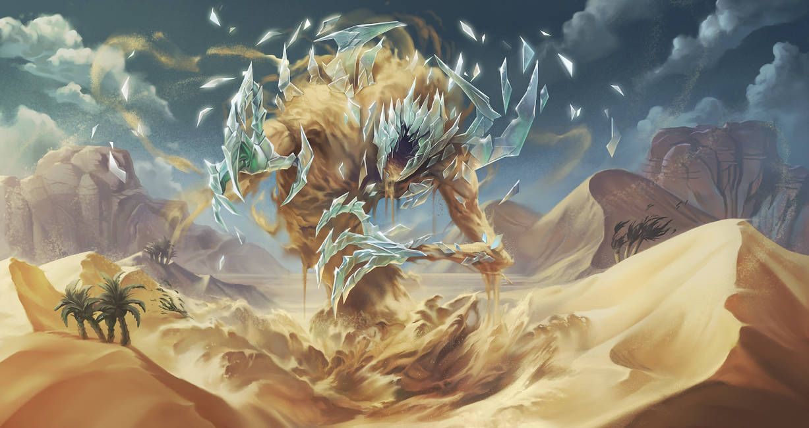

Религия Поэдрума

Исконной религией Поэдрума являлась искажённая вера в пантеон 11 богов. Особым почтением среди адептов Огненной Башни пользовался Хиозерас, покровитель их стихии. С появлением колоний на материке появилась церковь Рэвила, однако среди местного населения она не получила широкого распространения. Исключением были несколько мелких княжеств северного побережья, находящихся в постоянном контакте с прочими островами.
Однако с приходом Ордена к власти единственным Богом стал Демес, или, как его ещё называют, Бог Справедливости. Его адепты пропагандировали то, за что и сражались — равенство, свободу и справедливость. Сам же Демес даёт свободу своим последователям от какого-либо прямого влияния, не только не воздействуя на них, но и ограждая своих поклонников от других Богов. Однако если они сделают что-то, что ему не понравится, — за этим последует довольно жестокое наказание. А нравится ему то, что входит в его понятие о справедливости: всеобщее равенство и подобные вещи. Счастье для всех людей, если угодно. И его последователи не чураются крайне жестоких методов в достижении своих целей.
География Мериона · Поэдрум · Религия